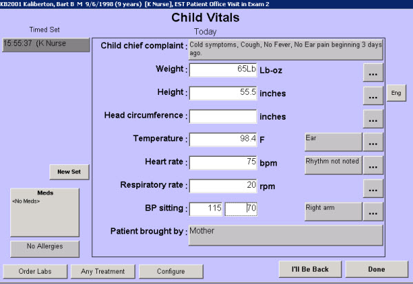

|
Description
This screen displays the appropriate fields for documenting vital signs depending on the workplan assigned to the patient encounter and the practice specialty. For example, the Vitals screen for a Pediatric office visit will differ from the Vitals screen for an Internal Medicine office visit.
Regardless of specialty, certain elements of the Vitals screen are consistent. The Vitals screen allows the documentation of the following information:
- Weight
- Height
- Temperature
- Blood pressure
- Respiratory rate
- Current Medications - if the patient has any current medications, they will display in the Meds box. Select this box to access the full list on the Current Medications screen
- Allergies - if the patient has reported any allergies, the text of this button will read 'Allergies' in red, if no allergies have been reported, the button reads 'No Allergies.' Select the button to access the Allergies screen to review or document allergies.
Other options are also available such as Orthostatic or Postural blood pressures, Pulse Oximetry, BMI, Fundal Height, Respiratory rate, etc; depending on the practice specialty and preferences.
How to Access This Screen
Access this screen by:
- Selecting the small icon to the left of Vitals on the Patient Chart
- Selecting the description (title) of Vitals on the Patient Chart, then selecting the description again from the dashboard that appears
Screen Example

Want to Learn More?
Related Solutions
Screen: Current Medications
Screen: Allergies
How to: Document Vital Signs
How to: Document Child Vitals in Pounds and Ounces
How to: Change from English to Metric Readings
How to: Document Patient-reported Allergies
How to: Document a Current Medication
|